その他どこに入れるか迷ったもの
ホーム > ロマサガＲＳ > ロマサガＲＳ佐賀コラボ_2021年 > その他8/1～8/4 ワラスボ
制圧戦の最後のボスはワラスボ。
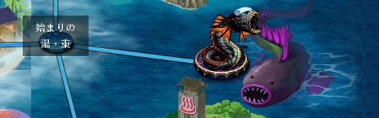
去年も制圧戦の最後はワラスボでしたね。
今年のワラスボは頭にタオルを乗せていますねw 湯上りでしょうか？ww
このワラスボは、これまでのエリアのボスとして登場した四天王と将魔の技を使ってきました。中々強力なボスでしたが、運営にHPを減らされてしまったのが一番印象に残りましたね。
本物のワラスボに関する話題はシュウザーの所で書いたのでここはさくっと次に行きます。
その他
ここから先は、佐賀コラボでネタになってはいたもののこの記事内のどこで話題にすべきかわからなかったものを記載していきます。
蒸気機関車
制圧戦マップの左上に蒸気機関車がありました。生放送時の画像では「高輪築堤」と書かれています。
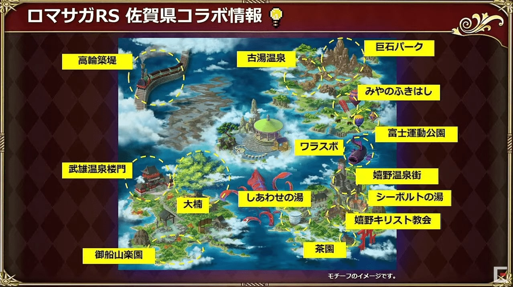
・・・高輪築堤？？
高輪築堤（たかなわちくてい）
以下、引用です。
「高輪築堤は、明治５（1872）年にわが国初の鉄道が開業した際に、海上に線路を敷設するために築かれた鉄道構造物です。平成31（2019）年4月、品川駅改良工事の際に石垣の一部が発見されました。」
引用元：港区公式サイト 高輪築堤跡
以下の記事を見ると、この高輪築堤を佐賀県に移築するという話があるみたいですね。
高輪築堤の一部を佐賀県へ移築か？鉄道創業の立役者・大隈重信にあやかる
なんか動画もあったので貼っておきます。
で、何で佐賀県に移設？って思うんですけど、どうやら佐賀は蒸気機関車も結構有名みたいでして、、、日本で初めて蒸気機関車の模型を作ったのが佐賀藩らしいです。
今でも佐賀では過去実際に走っていた、4つの蒸気機関車を街中で見ることができます。折角なので Google Map で見てみました。
国鉄268号蒸気機関車
29611号
C11259号
D51206
- 初の国産蒸気機関車は佐賀藩が作った…模型だけど
- 保存蒸気機関車の所在地
- さがの歴史・文化お宝帳お宝帳
- 日本にある蒸気機関車
- 鉄ちゃんラボ
- 文化遺産オンライン
- D51 206号蒸気機関車 静態保存
- 【JR鳥栖駅】鉄道ファンにはたまらない駅！
陶版（とうばん）
2021年7月28日のロマサガRS公式生放送で、佐賀県に陶板を設置する予定であることが発表されました。
以下動画の31分52秒あたりから
設置される予定の陶板は以下の3枚らしいです。
嬉野温泉のアセルス、白薔薇の後ろにあるのはシーボルトの湯、
武雄温泉のアルカイザー、レッドの後ろにあるのは武雄温泉橉門 、
古湯温泉のジニー、ウィルの後ろにあるのは宮の淵橋です。
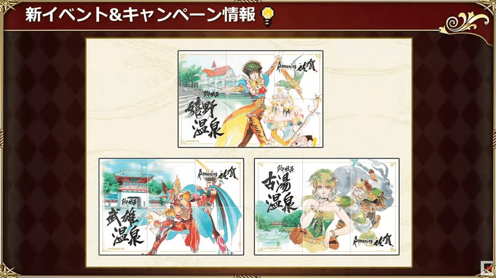
佐賀県に設置されている陶板の実物の写真は市川さんがツイートしていましたね。
これは佐賀県唐津市内の陶版なのですが、佐賀には街の至る所に陶版が設置されていてどれもとても美しいのです。#ロマ佐賀 pic.twitter.com/yK4QGWlQ6b
— 市川雅統 Masanori Ichikawa (@saga_ichikawa) July 29, 2021
凌風丸（りょうふうまる）
セルマは「発信！凌風丸」という技を持ってきましたね。
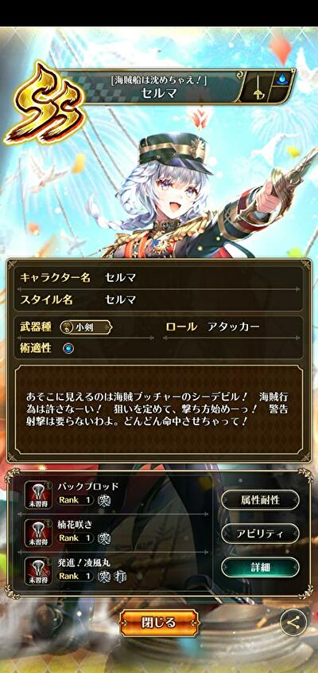
【ロマンシング サガ リ・ユニバース】にて「セルマ」を描かせていただきました。
— 眠介 (@_nemusuke) August 11, 2021
どうぞよろしくお願いいたします！https://t.co/j8tapuIA5y#ロマサガRS #ロマ佐賀 pic.twitter.com/uC1VTNp9u1
凌風丸は幕末に佐賀藩が建造した蒸気船で、日本で建造された最初の実用蒸気船です。
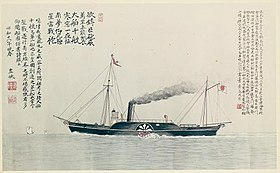
※写真はWikipedia 凌風丸 (佐賀藩)より抜粋。
虹の松原（にじのまつばら）
唐津市にある「虹の松原」は、三保の松原、気比の松原とともに日本三大松原のひとつに数えられる景勝地です。海岸線に沿って虹の弧を描くように広大な面積を有しています。
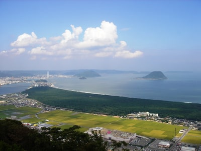
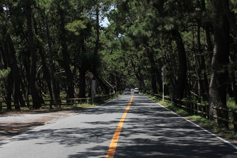
※写真はあそぼーさが 虹の松原(唐津市)より抜粋
アンサガのヴェントとローラは虹の松原に関係する技を持っていました。
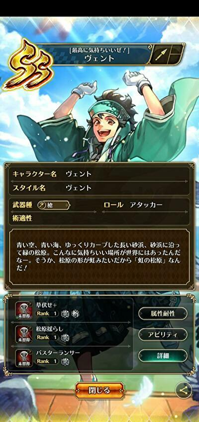
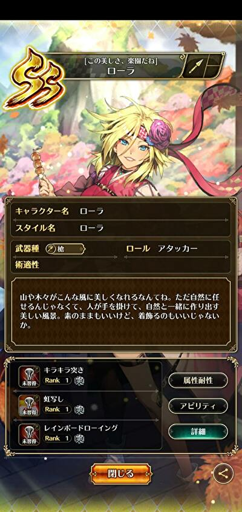
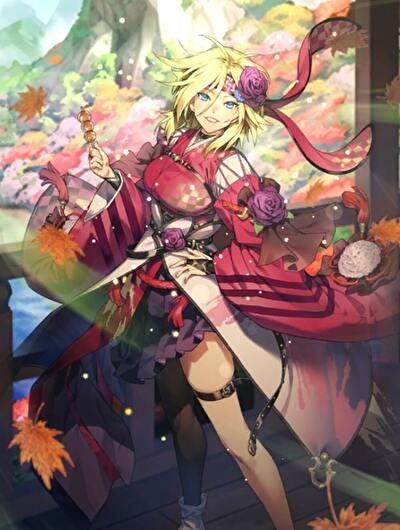
参考
ひょうたん島公園のひまわり
アルカイザーの新技：サンアル・フェニックスはひょうたん島公園のひまわりからきていたんですねー。（技発動時、下からひまわりが生えてきている）
佐賀ガチャでアルカイザーだけ佐賀が無関係と思わせて、サン・アルフェニックスは立派な佐賀技🌻ひまわりで有名なひょうたん島公園があります☺️#ロマ佐賀 pic.twitter.com/e42UfXua3n
— つぶら通 (@sagancingroma) July 31, 2021
参考
祐徳稲荷神社（ゆうとくいなりじんじゃ）
ナハトズィーガーにホーム画面で話しかけるとこんなことを言ってきます。
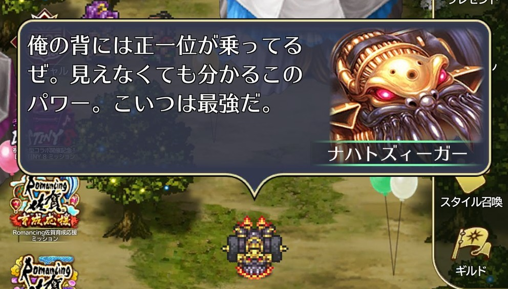
正一位（しょういちい）は以下の意味があるみたいです（以下、weblioより引用）。
１．諸王および諸臣に与えられる最高位の位階。
２．明治以前、神社に与えられた最高位の神位。また、特に稲荷神社のこと。
引用終わり。
佐賀県には「祐徳稲荷神社」という神社があります。
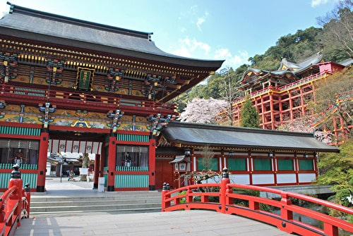
※写真は佐賀県鹿児島市公式観光サイト 祐徳稲荷神社
ナハトズィーガーは祐徳稲荷神社に関連するスタイルとして実装されたみたいですね。よく見ると、スタイル絵の背景に祐徳稲荷神社が描かれていることがわかります。
これ、祐徳稲荷神社からの景色です。良い眺めですね！！
吉野ヶ里歴史公園
佐賀県には「吉野ヶ里歴史公園」という公園があります。
以下、公式HPの公園概要から引用
『吉野ヶ里歴史公園は、「弥生人の声が聞こえる」を基本テーマに、日本の優れた文化的資産である吉野ヶ里遺跡の保存と、当時の施設の復元や発掘物の展示などを通じて、弥生時代を体感できる場を創出し、日本はもとより世界への情報発信の拠点とすることを目的に作られました。』
引用終わり
この公園が出来た経緯：
昭和61年から行われた文化財の発掘調査で、邪馬台国の様子を彷彿とさせる建物跡が発見され、それを国営吉野ヶ里歴史公園として整備。平成13年4月からその一部が開園され始めたのだそうです。
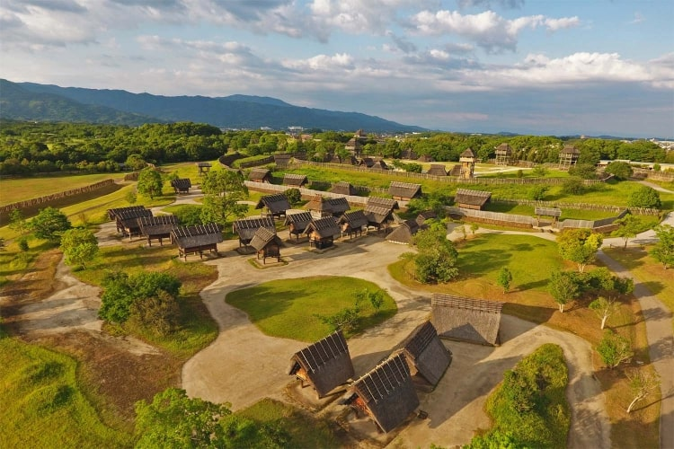
※写真は公式HPの公園概要より抜粋
邪馬台国と言えば卑弥呼ですよね。こんな感じの巫女装束の卑弥呼が思い浮かぶと思います。
※画像はイラストAC 卑弥呼
吉野ヶ里歴史公園では、「吉野ヶ里 光の響」というイベントが毎年開催されているようです。
吉野ヶ里遺跡の環濠集落がキャンドルやかがり火でライトアップされ、幻想的な雰囲気となります。
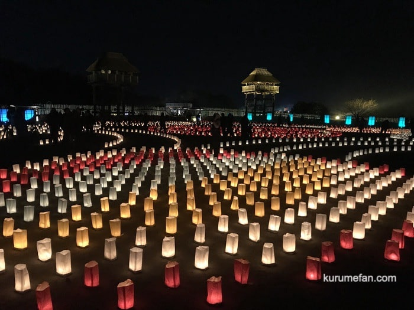
※写真はこちら
なんでこんな話をしてるかというと、佐賀コラボで実装されたスカイアが巫女の姿をしていて、背景が弥生っぽい建物に灯がともっている絵だからです。これはこの場所がモチーフになっています。
スカイアの絵を描いた本人（はぬすさん）もツイートのリプ欄で「モチーフは佐賀県の吉野ケ里」と仰っているので間違いないです。
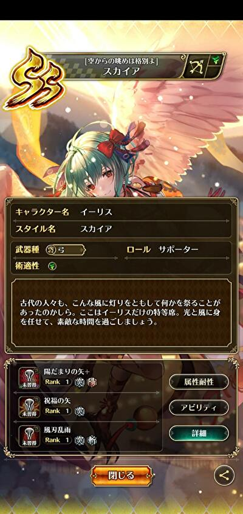【ロマンシング サガ リ・ユニバース】スカイア
— はぬす (@hanusu) August 13, 2021
SQUARE ENIX様の「ロマンシング サガ リ・ユニバース」にて、
『SSスカイア』を描かせて頂きました。https://t.co/Ccf30DMwZc#ロマサガRS #ロマ佐賀 pic.twitter.com/b68WV3A1Yu
上のスカイアのセリフにある「古代の人々」というのは弥生時代の人々の事でしょう。
吉野ヶ里 光の響をドローンで空撮した動画を発見したので貼っておきます。スカイアが特等席から見ている景色はきっとこんな感じなんでしょうね。
名尾手漉和紙（なおてすきわし）の扇子
佐賀県佐賀市大和町には「名尾手すき和紙」という名前の和紙があります。
以下、名尾手すき和紙 公式サイトより引用
『300年の歴史を持つ名尾手すき和紙は、和紙の原料のひとつである梶の木の栽培から一枚の紙ができるまでの全ての工程を佐賀県の名尾で行う手すき紙の工房です。名尾は豊かな湧き水と原料栽培に適した寒暖差をもたらす谷に位置し、かつて100軒もの紙すき工房が軒を連ねましたが、現在、当工房を残すのみとなっています。名尾和紙最後の工房として、伝統あるものづくりを次代に継承していきます。』
引用終わり
この和紙を使って作った扇子が、制圧戦のドロップアイテムになっている「名尾手漉和紙の扇子」です。
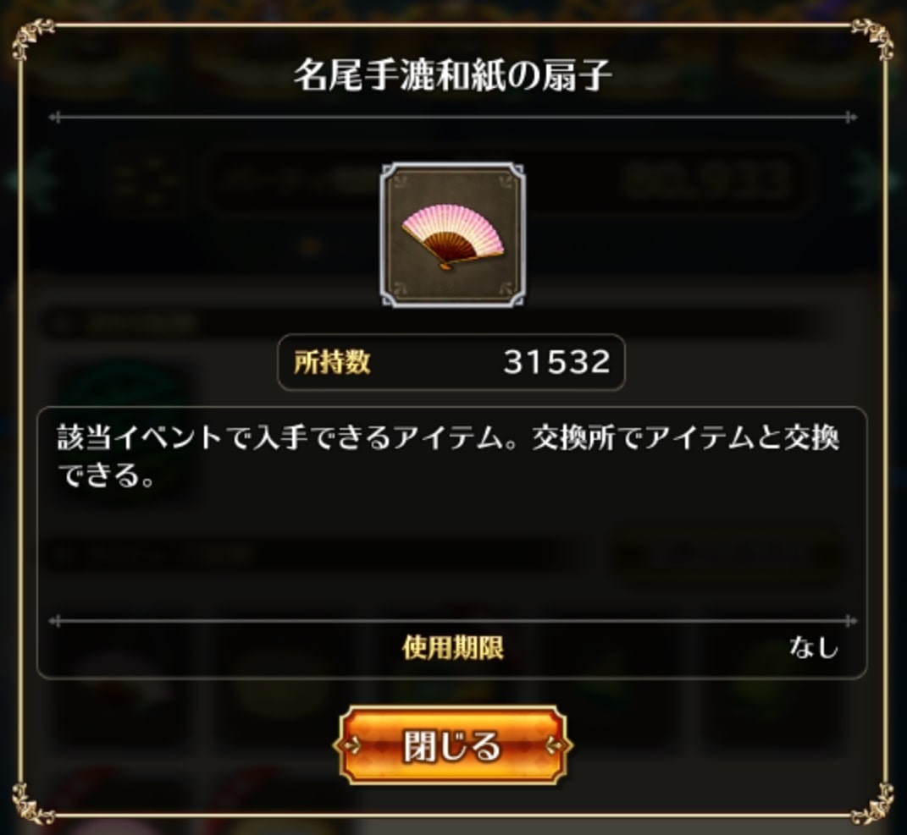
オンラインストア（残念ながら全部SOLD OUTですが。。。）で扇子はもちろん、封筒や便箋、カレンダーなどを取り扱っている（いた？）みたいです。
他にも、公式サイトの事例を見ると、唐津くんちの文化財修復や提灯、神具など様々な事例があるみたいですね。
参考
おまけ
ここまでで、私が把握している制圧戦関係の情報は書き切りました。あとは制圧戦に中に見た、面白かったツイートなどをご紹介してこの記事を締めようと思います。
戦闘員が風呂上がり（笑）
何か違和感あると思ったら、
— コッペリア (@s204_555) July 29, 2021
戦闘員たち風呂上がりやん・・・。
しっかり佐賀満喫してる！#ロマ佐賀 pic.twitter.com/yFG8XXEIIR
雷竜が聖剣伝説のラスボスに似てる
君、聖剣伝説とかに出ていなかった？ pic.twitter.com/XxKQWGWWcS
— やる夫茶 (@yaruocha) July 28, 2021
そして去年同様、牛に話しかける謎の遊びが流行る（笑）
ごめん無理#ロマ佐賀 pic.twitter.com/wju06ns8EJ
— にっくす (@rknixer) August 7, 2021
お土産(牛) pic.twitter.com/WQjFRw3RMN
— やしあ (@yashiaRS) July 29, 2021
今夜は焼き肉かな～#ロマサガRS#ロマ佐賀 pic.twitter.com/erISOOReTU
— sagamax (@sagamax__) July 31, 2021
巷では推しで牛に話しかけるのが流行ってるそうですね、私もいざ！
— cestus (@cestus777) July 30, 2021
(´；ω；｀)ﾌﾞﾜﾜｯ#ロマ佐賀 pic.twitter.com/wLL72q2AKE
無理難題を言うアルカイザーと
— ゆきんこ@気まぐれ浮上 (@yukinko_8211) August 7, 2021
恐らく佐賀牛が欲しいと
言っているジニーちゃん#ロマ佐賀 pic.twitter.com/okhU06HO9L
「佐賀牛極上A5ランクのサーロインステーキです」#ロマ佐賀 #ロマサガRS pic.twitter.com/enDMumQ00F
— はちみつ銀 (@silverd001) August 2, 2021
牛の不安を煽る人々と
— やしあ🍥 (@yashiaRS) August 2, 2021
牛が心配なファティマちゃん。 pic.twitter.com/LNVQJKiZ8L
最後に公式サイトへのリンクを張って終わりにしたいと思います。
Romancing 佐賀 2021
今度は「サガ風呂」 ロマ佐賀企画、温泉地とコラボ 嬉野、武雄、古湯の魅力発信
以上！
他のエリアへのリンク
- 2021年佐賀コラボトップ
- 始まりの湯エリア
- 古湯温泉エリア
- 嬉野温泉エリア
- 武雄温泉エリア
- その他（今ここ）